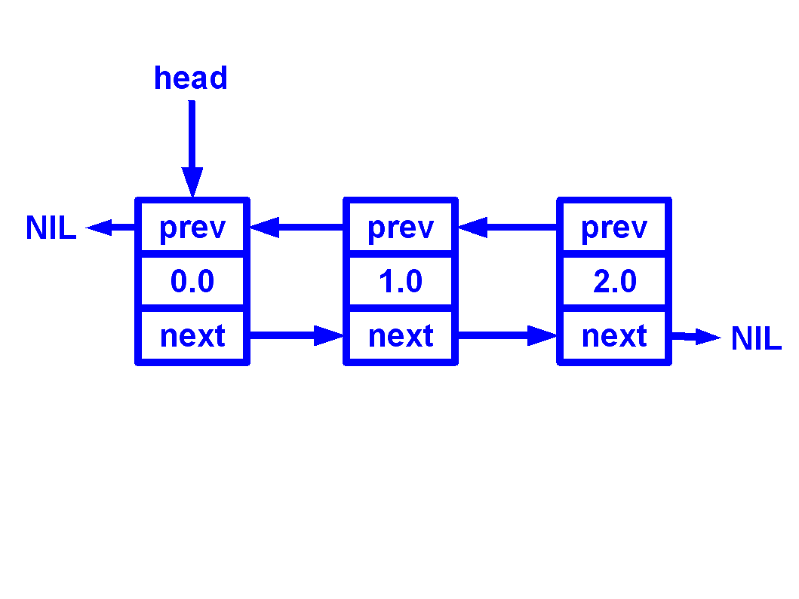
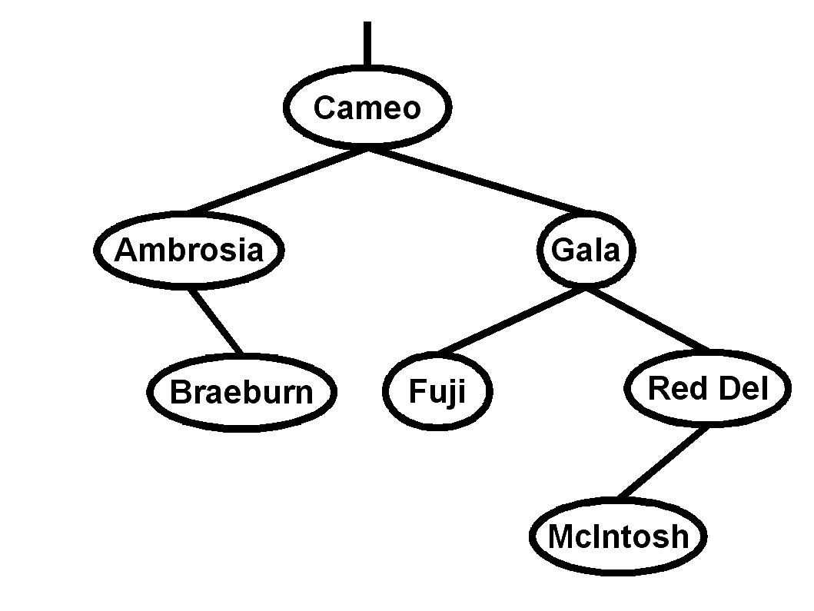
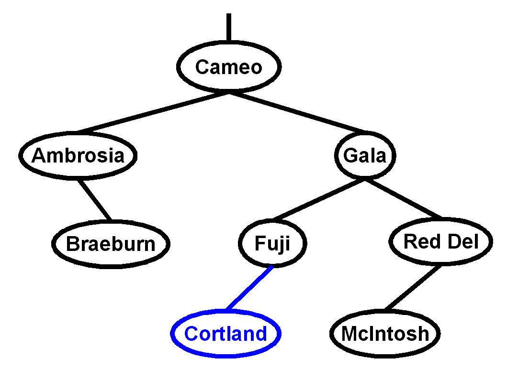
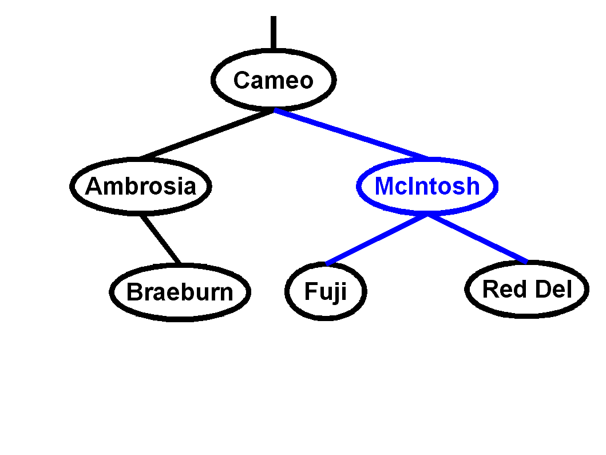

-
Name the five steps to top-down
problem solving as described in the text.[5]
Write, Apprehend, Design, Execute, Scrutinize
-
Describe the five program structure/flow
abstractions mentioned in the text. [5]
Sequence, Selection, Repetition, Composition, Parallelism
- Fill in the blank:
- "Computers are tools, and computing scientists are toolsmiths."
[2]
- The SIZE function is used to determine
how many LOCs are used to store an item in memory. [1]
- A procedure that returns a value is called a recursive procedure.
[1]
- Express 4AH in decimal: 74, octal: 112B, and
binary: 1001010 [3]
- Before using the value of a variable for the first time in a program,
we need to declare and initialize it. [2]
- The four loop structures in Modula-2 are
WHILE, REPEAT/UNTIL, FOR, LOOP [4]
- A new type made from a sequence of consecutive values of an
existing type is called a subrange of the host type. [1]
- A procedure that invokes itself is called a recursive procedure.
[1]
- The function that evaluates natural logarithms on real numbers is found
in the RealMath standard library. [1]
- True: The word FUNCTION is a legal identifier. [1]
- 4GB = 2^25 kilobit. (You may express it as a power of 2.)
[3]
-
In the space provided, evaluate each of the following four Boolean
expressions, or if they give an error, indicate why.
- 'X' >= 'A' AND 'X' <= 'Z' expr incompat: 'A' AND 'X'
[2]
- (5 / 12 = 2) OR NOT FALSE AND FALSE FALSE
[2]
- (1#1)&~(1/1<1) FALSE
[2]
- (6 REM 4 > 2) AND (2 REM 0 = 2) FALSE
[2]
-
-
Name [3] the 3 standard I/O libraries used to
open/close files, and the differences[3] among them.
Name at least two procedures [3] from each library.
- StreamFile (Open, Close): normal restricted sequential stream
- SeqFile (OpenRead, OpenWrite, OpenAppend, Close, Reread, Rewrite):
rewindable sequential stream
- RndFile (OpenOld, OpenClean, SetPos, NewPos, CurrentPos, StartPos, EndPos):
random-access file
-
What is wrong with this loop, intended to count down from 100 by threes?
[4]
The loop will skip past the termination condition, resulting in an
error when the CARDINAL counter tries to go below zero.
Change the termination condition to check for something like
counter < 3.
MODULE CountDown;
VAR
counter : CARDINAL;
BEGIN
counter := 100;
REPEAT
statement sequence;
DEC (counter, 3);
UNTIL counter < 3;
END CountDown.
(I really meant to have counter be an INTEGER; but oh well.)
-
Rewrite the following FOR loop code snippet as a general LOOP.
Don't worry about the rest of the module (IMPORT, VAR, etc.).
[5]
FOR idx := 0 TO LENGTH (name) DO
WriteCard (ORD (name [idx]));
END;
idx := 0
LOOP
IF idx >= LENGTH (name) THEN
EXIT
END;
WriteCard (ORD (name [idx]));
INC (idx);
END;
-
Tell me everything you know about Modula-2 records.
[5]
Records are aggregate data types that can store multiple fields of different
type. For example, a record declaration might look like this:
TYPE
Student = RECORD
name : ARRAY [0..20] OF CHAR;
ID : CARDINAL;
END;
VAR
myStudent : Student;
To access fields within a record, the dot (.) operator is used: e.g.,
myStudent.name = "Jane Doe";. A WITH block can be used as a
shorthand for accessing multiple fields from the same record.
(You can optionally also go into variant records.)
-
In your own words, describe what inheritance means in object-oriented
programming. [5]
Inheritance is a means of constructing new classes from old classes.
The new child class inherits, or derives, properties (e.g. methods,
attributes) from the parent, or super-class. The child class may also
add properties of its own, or (in some cases) override properties
inherited from the parent class.
-
Write a complete declaration for each of the following data types:
- A string type: [2]
TYPE String = ARRAY [0..10] OF CHAR;
- A type defining three exceptions,
goodEx, badEx, and uglyEx [2]:
TYPE ClintEx = (goodEx, badEx, uglyEx);
- A type for only the lowercase letters [2]:
TYPE LowerCase = ['a' .. 'z'];
- A type for an m by n matrix of booleans [2]:
TYPE BoolMatrix = ARRAY [1..m] OF ARRAY [1..n] OF BOOLEAN;
- A doubly-linked (bidirectional) list of reals [3]:
TYPE
DoubList = POINTER TO DoubListNode;
DoubListNode = RECORD
data : REAL;
prev, next : DoubList;
END;
-
Draw a diagram illustrating a doubly-linked (bidirectional) list
with three nodes. Include all relevant pointers and indicate
if any are NIL. [4]

-
On a separate paper,
write a Modula-2 procedure to delete a node from a doubly-linked
list. A complete module is not necessary. You may assume any necessary
IMPORTs have been done. You may assume type declarations given above.
Pseudocode/design is not necessary to show, but is good for partial credit.
[10]
You may assume the user won't ask to delete the first or last node
(you can ignore the tricky special cases at the end-conditions)
The following code handles those cases anyway.
(* Delete the (delidx)-th node from a doubly-linked list.
* The list starts from the 0-th node.
* The ends of the list should be NIL-terminated. *)
PROCEDURE Delete (VAR head : DoubList; delidx : CARDINAL);
VAR
cur : DoubList;
idx : CARDINAL;
BEGIN
cur := head;
idx := 0;
WHILE (idx < delidx) AND (cur # NIL) DO
cur := cur^.next;
INC (idx);
END;
IF cur = NIL THEN
WriteString ("node doesn't exist!");
RETURN;
END;
IF delidx = 0 THEN (* special case: delete head *)
head := head^.next;
END;
IF cur^.prev # NIL THEN
cur^.prev^.next := cur^.next;
END;
IF cur^.next # NIL THEN
cur^.next^.prev := cur^.prev;
END;
DISPOSE (cur);
END Delete;
-
Fill in the following grid with moves for a knight's tour.
The first two positions are filled in for you.
You may want to do your scratch work separately
and copy just your final solution here.
Partial credit for showing backtracking work.
[6]
-

Consider the following binary search tree:
- Which node is the root? [1]
Cameo
- What is the depth of the tree? [1]
3
- Name all the leaves in this tree [2]:
Braeburn, Fuji, McIntosh
- Do a post-order traversal of this binary tree [3].
Braeburn, Ambrosia, Fuji, McIntosh, Red Del, Gala, Cameo
- Using the algorithm discussed in class, insert a node,
"Cortland", into this BST and diagram the result.
[3]

- From the original BST, delete the node, "Gala", using the
algorithm discussed in class, and diagram the result.
[3]
